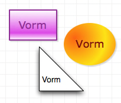

Vormen

Een vorm is een tweedimensionaal object dat tekst kan bevatten, en dat kan worden gevuld met kleuren en afbeeldingen. U kunt vormen maken met het vormgereedschap of het pengereedschap, of vormen uit figuren slepen. Met het tekstgereedschap kunt u vormobjecten maken die speciaal voor tekst zijn ontworpen.